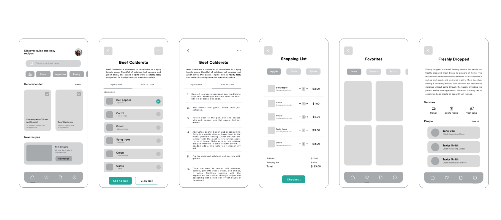
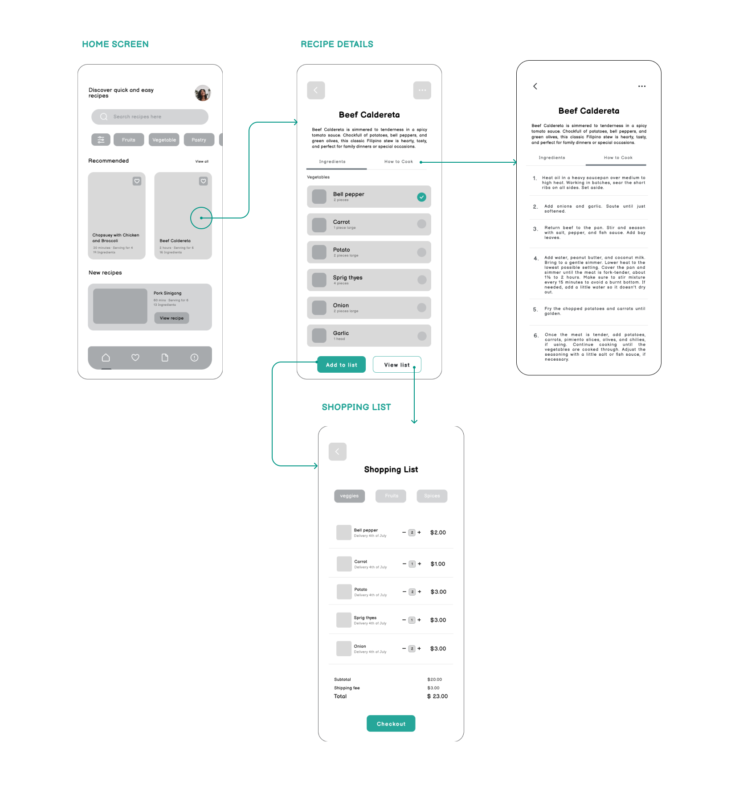
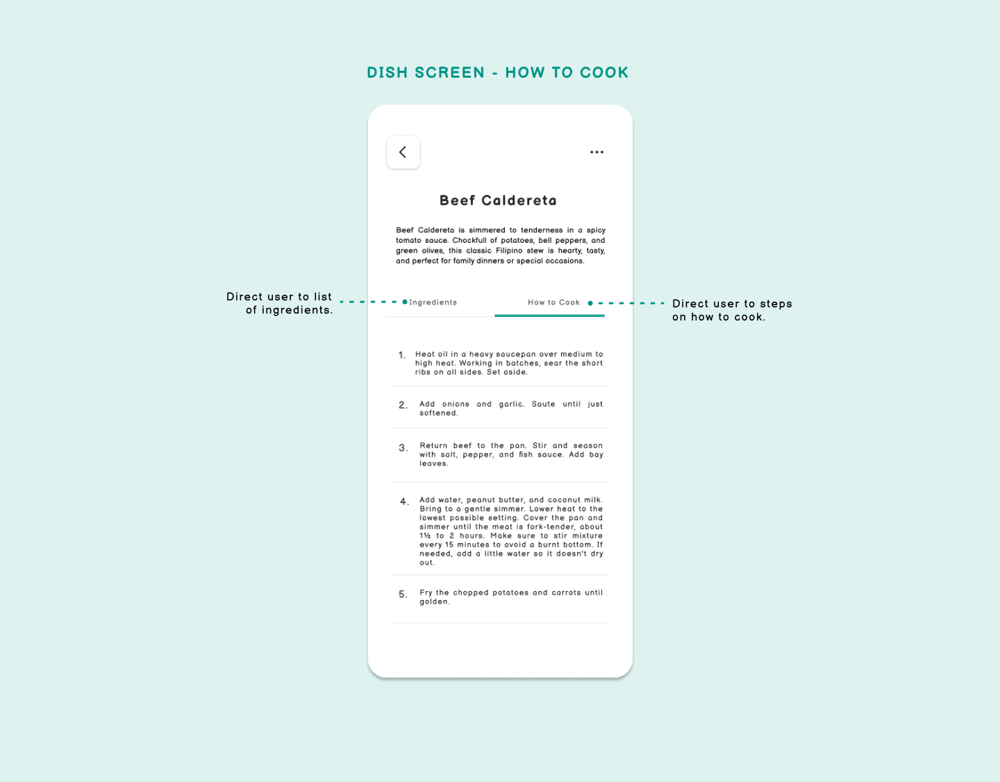
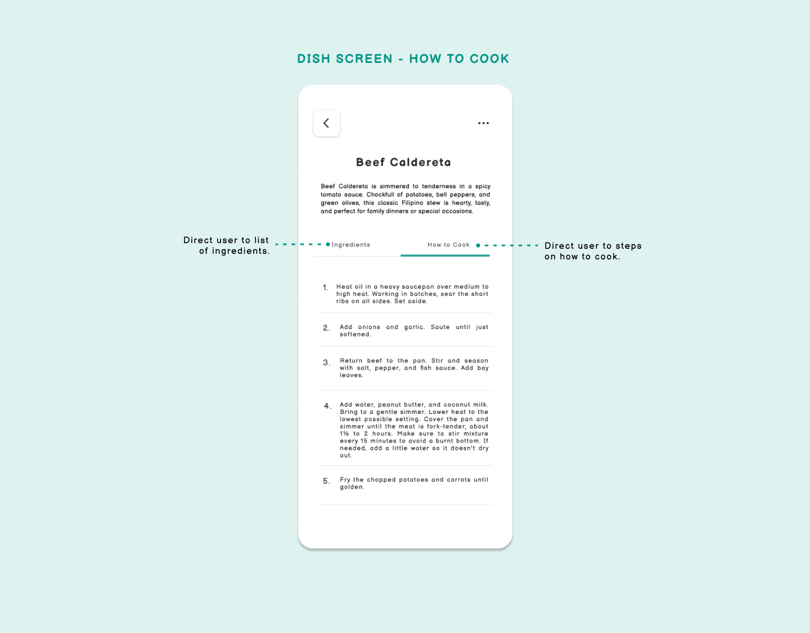
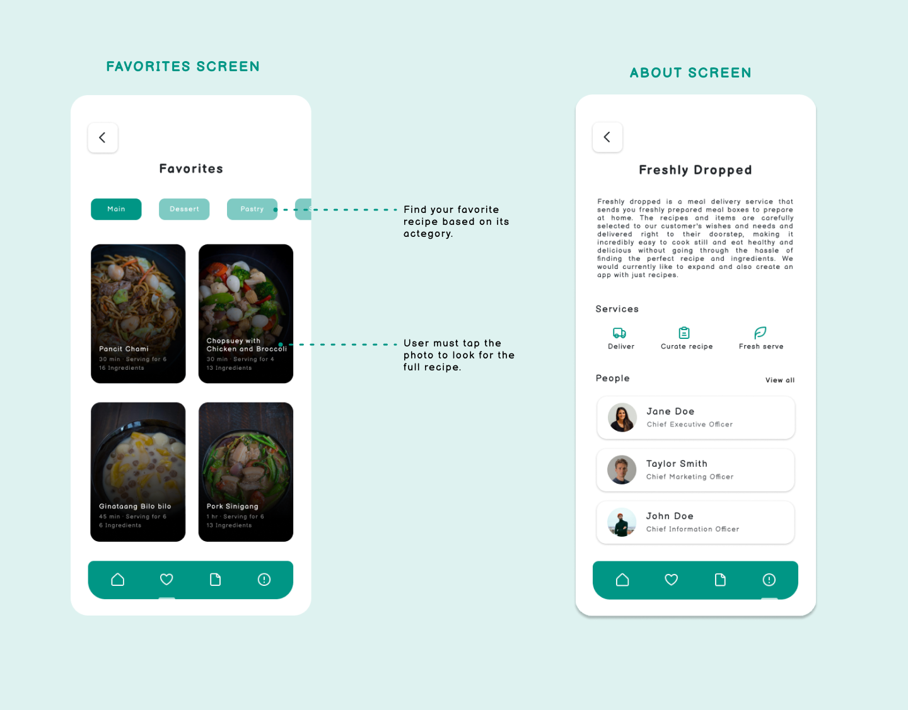
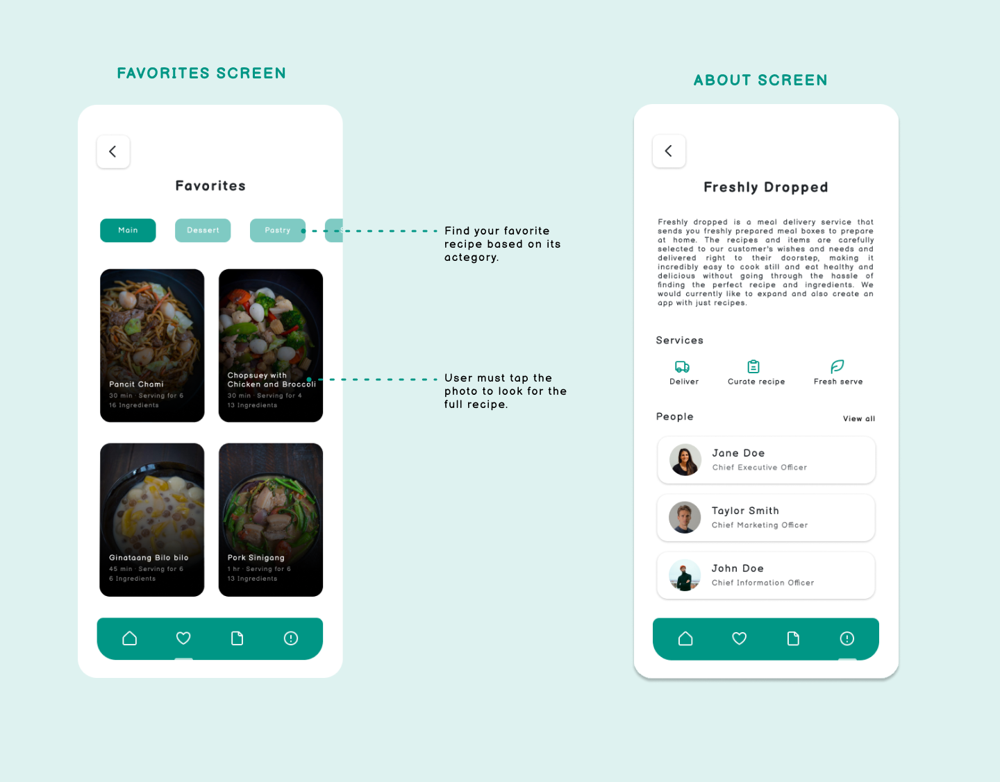

Design to communicate, not just decorate.
-Tony Stanton
Get in Touch
Let's make something more meaningful and user-friendly by making things more visual and conceptual.
josephine.falejo.yee@gmail.com

Freshly Dropped is a food delivery service that wants to create a recipe-only app to get people into cooking on their own terms, letting them choose meals and then decide whether they want to order the ingredients through Freshly Dropped or get themselves by going grocery shopping. This project is a self-practice design to enhance my design thinking and problem-solving skills.
Develop a mobile app that allows users to scan recipes and choose if they want to order ingredients through the Freshly Dropped service.
The process is divided into the following steps: discovery, ideation, design, and testing. I'll explain my approach to completing this project below.
Before doing any ideation, I started to analyze the service that they offer. According to the client's preference, the app design had to include the following functionality
Proposed a design that provide quick access to key parts (home, favorites, shopping list, and about).
I created task flows for steps a user typically goes through in order to complete 2 comon tasks in Freshly Dropped:
To help me visualize the screens that users will stare at, I started by creating low fidelity designs for different screen scenarios.
 After sketching lo-fi screens, I apply my style guide to my wireframes to turn them into visual deisgns.
The app has five main screens which are home, favorites, shopping list, about, and recipe. The default screen which is the home screen, has a navigation bar at the bottom of the screen that displays 4 destinations. Each destination is represented by an icon, the 4 tab options are:
The following series of steps that users take to achieve goals is explained here. The pages, logic, and actions required to achieve the goal are shown in user flow.
 

 

I design a recipe and ordering mobile app